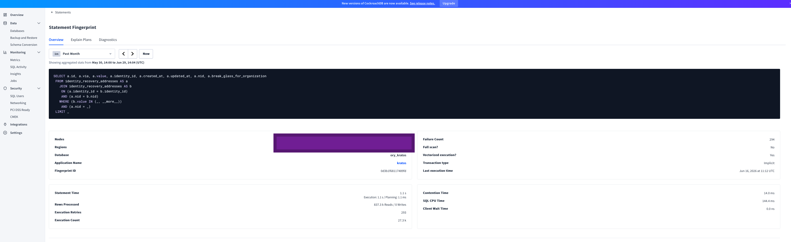
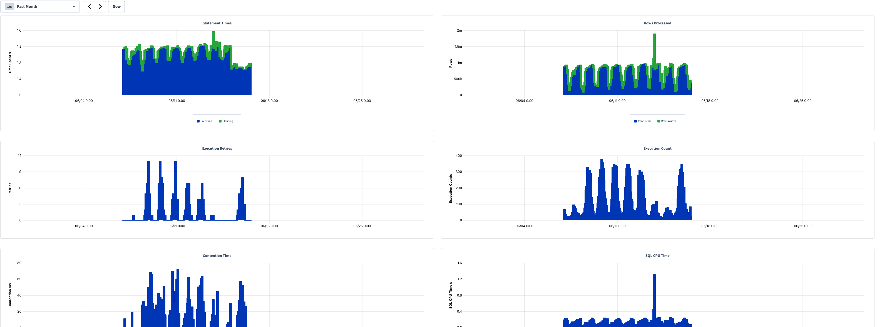
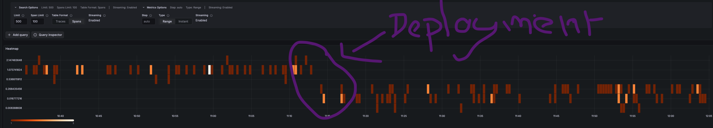

Philippe Gaultier
Philippe Gaultier
Philippe Gaultier
Philippe Gaultier
Published on 2026-06-29. Last modified on 2026-06-29.
This is part 1, there will be more SQL optimization stories in the same vein.
It all started one morning, I opened Slack as usual to start my working day, only to find a message from the CTO:
Hello this query reads like 700k rows
To engineers replying:
The plan looks ok IMHO, indices are being used:
And the CTO answering:
This query should not read 700k rows, but like 10 or something.
And spoiler alert, he was dead right. I started to look into it and this turned out much more interesting than just 'it was a full table scan, I added the right index and moved on'.
As always, the code, and fix, are open-source!
This query actually runs against all 4 databases we support (SQLite, PostgreSQL, MySQL, CockroachDB), but here I will focus on CockroachDB because that is the database that we run in production and because it has important differences, which make this investigation interesting.
The software is Kratos, a widely used authentication and identity management service. Users of this software are humans. Humans often register with an email and password (Kratos also supports passwordless schemes such as passkeys, webauthn, etc, but the proverbial email+password approach remains very much in use). Humans also tend to forget their password. That's why Kratos like any identity management service worth its salt, supports password recovery.
The user enter one of their addresses (email, phone number, etc), and if this address is in the system, a list of masked addresses is shown to them, they pick one, and a recovery link or code is sent to them on that address. Using that link or code, they can setup a new password. Pretty standard.
This is done with one SQL query (slightly simplified from the real one):
SqlSELECT * FROM identity_recovery_addresses AS a JOIN identity_recovery_addresses AS b ON a.identity_id = b.identity_id AND a.nid = b.nid WHERE b.value = ? AND a.nid = ?
Kratos supports multi-tenancy, so each tenant as an id called nid, each row stores nid, and each query clause contains WHERE nid = ? to isolate each tenant. But this is a non factor: we know the tenant id from the start since each tenant has its own subdomain(s), so for this query, the nid is effectively a constant.
The approach is relatively straightforward with a self-join:
nid) and the provided address, for example foo@bar.com, find the identity (i.e. the user account) for it.Now that we have the identity id, find all addresses for that identity (ON a.identity_id = b.identity_id):
SqlSELECT * FROM identity_recovery_addresses AS a JOIN identity_recovery_addresses AS b ON a.identity_id = b.identity_id AND a.nid = b.nid WHERE b.value = 'foo@bar.com' AND a.nid = '000e377a-062c-45b1-961c-1b28d682df6a'
Now, Kratos can show the list of masked addresses e.g. +15234****56 if it's a phone number, or foo@****.com if it's an email address. The masking logic is pretty smart so accidental information disclosure is avoided. Kratos also pretends to send the recovery link/code to a non-existing address, so that it's not possible for an attacker to probe a website for certain addresses. The last point can actually have real life consequences in certain countries for certain websites, e.g. LGBT ones.
(Always remember that your code can impact lives).
Anyways, I am the one who actually wrote this query some months ago and I remember confirming in production that the query plan was sensical.
Now, the query is impacting the application and the database with its bad performance. It's not clear to me if:
In any event: time to fix it.
The CTO actually linked in its original message a link to the statement in the CockroachDB dashboard, which shows very surprising statistics:

| Metric | Value |
|---|---|
| Failure Count | 294 |
| Full scan? | No |
| Vectorized execution? | Yes |
| Transaction type | Implicit |
| Statement Time | 1.1 s (Execution: 1.1 s / Planning: 1.1 ms) |
| Rows Processed | 837.3 k Reads / 0 Writes |
| Execution Retries | 293 |
| Execution Count | 27.3 k |
| Contention Time | 14.0 ms |
| SQL CPU Time | 144.4 ms |
| Client Wait Time | 0.0 ns |

| Chart | Series | Approx. Peak | Notes |
|---|---|---|---|
| Statement Times | Execution + Planning | ~1.5 s | Mostly 1.0–1.3 s; activity ~06/07–06/15 |
| Rows Processed | Rows Read / Rows Written | ~2 m (spike) | Baseline ~0.5 m–1 m reads; one spike near 06/12 |
| Execution Retries | Retries | ~11 | Bursts of 4–11 between 06/07–06/15 |
| Execution Count | Execution Counts | ~380 | Periodic bursts, ~100–380 per interval |
| Contention Time | Contention (ms) | ~72 ms | Spiky, ranging ~20–72 ms |
| SQL CPU Time | CPU (s) | ~1.3 s (spike) | Baseline ~0.2–0.4 s |
Immediately the metrics that jump out to me (and to my CTO) are:
The other metrics are interesting but less important at the moment. For example, there is a relatively large number of retries and contention time. They probably are a by-product of the millons of rows scanned. Since looking for all recovery addresses of one identity (i.e. user) scans (but does not return) unrelated rows, it creates unintentional, and unneeded, contention on these rows.
The next step is to inspect the plan being used in production using EXPLAIN ANALYZE <query>, or for even more details: EXPLAIN ANALYZE (debug) <query>.
The first thing the plan does is this:
Plaintexttable: identity_recovery_addresses@identity_recovery_addresses_status_via_uq_idx spans: [/'gcp-asia-northeast1'/'000e377a-062c-45b1-961c-1b28d682df6a' - /'gcp-asia-northeast1'/'000e377a-062c-45b1-961c-1b28d682df6a'] [/'gcp-europe-west3'/'000e377a-062c-45b1-961c-1b28d682df6a' - /'gcp-europe-west3'/'000e377a-062c-45b1-961c-1b28d682df6a'] [/'gcp-us-east4'/'000e377a-062c-45b1-961c-1b28d682df6a' - /'gcp-us-east4'/'000e377a-062c-45b1-961c-1b28d682df6a'] [/'gcp-us-west2'/'000e377a-062c-45b1-961c-1b28d682df6a' - /'gcp-us-west2'/'000e377a-062c-45b1-961c-1b28d682df6a']
We see that it is using the right index identity_recovery_addresses_status_via_uq_idx (nid ASC, via ASC, value ASC). We see that it fans-out to every region: asia, europe, us, etc. This is expected: we originally do not know in which region the identity is stored, so we have to do that.
But there is a problem. Can you spot it? Unless you are an advanced CockroachDB user, I'd be surprised if you do. I know I did not spot anything at first.
I'll explain the plan is layman terms. This is what the query planner is doing, when a user enters foo@bar.com in the recovery screen:
foo@bar.com. It is linked to an identity (identity_id) and a tenant (nid).identity_id is the one found in step 1.1. Throw out the rest.So each time a user wants to reset their password, we load all recovery addresses of all users for this tenant, in memory. That is really not great and becomes worse and worse over time.
This explains the high latency and CPU usage!
In CockroachDB, indexes are a tuple, e.g. (nid, via, value). Conceptually, this is how the index looks like:

To use it the most efficiently, we specify all the fields, e.g.: WHERE nid = '1' AND via = 'email' AND value = zzz@accounting.com. The database can then do a 'point lookup', meaning trace a path from the root of the index to a leaf (i.e. a row):

Only one row is scanned, this is optimal.
What happens then when only the first field in the tuple is provided, for example, only the nid? Well, the path in the index is very short, and all nodes underneath (the whole subtree, shown here in red) must be scanned and inspected:

This is what happens to us, and it is very wasteful.
But wait, we do provide more than the nid: we provide the address! In fact, that's the only thing the user provides! So how come it was not used, and all rows for the tenant we loaded? Well, there's more: the order of the fields in the tuple also matters. So for a tuple (A, B, C), if we only provide A and C, it is as if we only provided A, and then we load every element underneath A.
So here it is, the root cause: we did provide the first and third field in the tuple, but not the second one, via.
So the query planner decided to use this index, this tuple of (nid ASC, via ASC, value ASC), but it only knows the first value, nid (the tenant). So it can only eliminate rows from other tenants. For a tenant with many many users, performance is really bad. It's not quite a full table scan, but it's a full tenant table scan!
via is actually a derived value: given the user provided address foo@bar.com or +49123456789, we can trivially identify whether it is an email address or a phone number: if it contains the character @, it's an email address!
So let's add the via clause in the query:
SqlSELECT * FROM identity_recovery_addresses AS a JOIN identity_recovery_addresses AS b ON a.identity_id = b.identity_id AND a.nid = b.nid WHERE b.value = 'foo@bar.com' AND b.via = 'email' -- <= First optimization: Add `via`. AND a.nid = '000e377a-062c-45b1-961c-1b28d682df6a'
And now the plan looks much better, using the same index as before:
Plaintexttable: identity_recovery_addresses@identity_recovery_addresses_status_via_uq_idx spans: [/'gcp-europe-west3'/'000e377a-062c-45b1-961c-1b28d682df6a'/'email'/'foo@bar.com' - /'gcp-europe-west3'/'000e377a-062c-45b1-961c-1b28d682df6a'/'email'/'foo@bar.com'] [/'gcp-us-east4'/'000e377a-062c-45b1-961c-1b28d682df6a'/'email'/'foo@bar.com' - /'gcp-us-east4'/'000e377a-062c-45b1-961c-1b28d682df6a'/'email'/'foo@bar.com'] [/'gcp-us-west2'/'000e377a-062c-45b1-961c-1b28d682df6a'/'email'/'foo@bar.com' - /'gcp-us-west2'/'000e377a-062c-45b1-961c-1b28d682df6a'/'email'/'foo@bar.com']
It's now a point lookup! And the plan even says for this first step: actual row count: 1. Perfect! Such a simple fix... If you know how indexes work in CockroachDB.
The self join can be understood as two queries: first, find the identity with the user-provided address. Second, find all addresses for this identity.
Only the first query truly needs to do a fan-out to all regions. Once we know the identity id, we know in which region it is. Since all the data for an identity is stored in one region, the second query does not need to talk to other regions at all! This is a big gain in terms of latency: at around 250ms network latency between distant regions, we can cut out one unneeded round-trip.
In CockroachDB, this is done by adding WHERE crdb_region = ? to the query. Let's do that:
SqlSELECT * FROM identity_recovery_addresses AS a JOIN identity_recovery_addresses AS b ON a.identity_id = b.identity_id AND a.nid = b.nid AND A.crdb_region = B.crdb_region -- <= Second optimization: Add `crdb_region`. WHERE b.value = 'foo@bar.com' AND b.via = 'email' -- <= First optimization: Add `via`. AND a.nid = '000e377a-062c-45b1-961c-1b28d682df6a'
From the plan, we now see that the only time we fan-out to all regions is in the first step, afterwards, we stay within the same region. We also see that latency was cut but ~200 ms, as expected.
In the original query we fetched all table columns. But I then realized that we only ever need to fetch and return the address column because this is what gets returned to the user browser to let them pick which address to receive the recovery link/code on.
So this is a simple change:
Diff- SELECT * + SELECT address FROM ...
I was midly suprised to see no change in latency from that. After inspecting the plan and the table schema, this is for a simple reason: the index used in the second step of the query is the primary index which stores (identity_id ASC, id ASC). address is not part of this index, so the whole row has to be fetched from the table. We could change this index to make it store this column: CREATE INDEX ... STORING (address) to avoid that extra fetch. But modifying the primary index of a big table in production is slightly risky, so it would need some careful consideration.
Still, with this optimization, we:
So even if it's a small win, it is still a win.

Latency for this query went from a consistent 1-2s to always < 0.5s.
More importantly, it completely disappeared from the top 10000 queries in terms of CPU time or rows scanned.
I initially tried to restructure the self-join into a CTE that does not specify via:
SqlWITH target AS ( SELECT identity_id FROM identity_recovery_addresses WHERE nid = ? AND value = ? LIMIT 1 ) SELECT A.value FROM identity_recovery_addresses A, target WHERE A.nid = ? AND A.identity_id = target.identity_id LIMIT 10;
It worked and performed a bit better than the self-join (without via), due to query planner quirks, but as soon as I understood that the query really needed to specify via, the CTE with via resulted in the exact same plan as the self-join with via.
I tried to split the query into two queries, thinking it would be easier for the query planner to understand. It did not help.
The real query does not use value = ? in the WHERE clause, it uses WHERE value in (?, ?): we pass the user-provided address as well as the normalized version of the address, and match any of the two.
I initially thought that IN was the culprit, and tried to rewrite it into WHERE value = ? OR value = ?, or simply WHERE value = ? when the unnormalized and normalized address are identical, but it made no difference.
When experimenting with the CTE, I observed that the performance was somehow different depending on the region the query is run in, and the region the identity is stored in (that some regions perform better). This was as simple case of CockroachDB being smart when crdb_region is not provided, and cancelling the fan-out to each region when matching data has been found in the local region first. This is called 'Locality Optimized Search', per the CockroachDB developers:
When using a LIMIT 1 clause (e.g. in your CTE above) the optimizer is able to take advantage of Locality Optimized Search - as soon as it finds the single row it is looking for, it stops searching for remote rows.
Pretty nice optimization, that was superseded by explicitly providing crdb_region.
[TODO]
A surface level lesson would be: all SQL performance problems are due to not using the right index. Which is not false! But there's much more here to take away.
Relational databases are very complex beasts and CockroachDB is one of the most powerful and complex ones out there, especially in its multi-region setup. Know your database, read the docs, ask the developers if that's an option. There is no such thing as 'a SQL database' - every SQL database behaves wildly differently from the others.
Many metrics matter, not only query latency: rows scanned (especially in a cloud environment, IOps are precious!), database CPU time, memory, max latency, cross-regions round-trips, contention time, etc. Keep a watchful eye on queries that rank the worst for these metrics, but also keep in mind that some metrics affect others - e.g. in our case, contention time and subsequent retries were artificially inflated by the suboptimal plan scanning too many rows. Regularly revisit these findings: they change over time. I command CockroachDB there because it exposes all of these metrics in a pretty dashboard. The only downside is that using it, you know which queries are problematic, and for which metric, but you're still far away from a good explanation, and remedy.
We also know that each index has to bear its weight, because it slows down every write, and might even end up unused by the query planner, thus being dead weight.
"Just provide in the WHERE clause of the query all the values you know up front" is not good advice: It worked here with via because of the tuple nature of indexes in CockroachDB and because via was the middle field in this tuple. But over-specifying the WHERE clause in the query can and will lead the query planner to worst plans, because the optimal index might not contain the extra fields you just added to the clause.
A query that performs ok now, might become a big problem later, when the table grows, or the data characteristics change, or the query planner decides to do something completly different today. Actually, I initially tested my optimizations in staging, and I see completely different plans and latencies from production, due to the data being much smaller or simply differently varied.
After a potential optimization has been applied, always follow-up to see if it made things better, worse, or the same. You'd be surprised. If it's worse or the same, it's still useful data to refine your understanding of the situation. If things improved, make it an announcement, it's good for morale!
Finally, when starting with any kind of optimization, you have to establish three main things:
For the recovery flow, latency (or throughput for that matter) do not really matter: whether it takes 1ms or 5s is fine. I say this as a performance junkie advocate! I hate slow software! But for user driven, rarely performed actions, a handful of seconds is ok! What is not ok is creating humongous load on the database for no reason, which impacts every action in the system. That was my goal: reduce rows scanned to <10 and CPU time to <10ms. Reducing latency is a nice side-effect.
If you enjoy what you're reading, you want to support me, and can afford it: Support me. That allows me to write more cool articles!
This blog is open-source! If you find a problem, please open a Github issue. The content of this blog as well as the code snippets are under the BSD-3 License which I also usually use for all my personal projects. It's basically free for every use but you have to mention me as the original author.
My views are my own and not those of my employer.